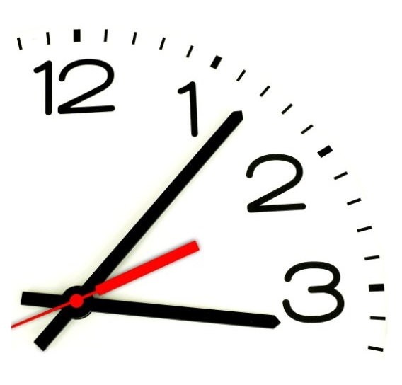

«Нет, не мало времени мы имеем, а много теряем. Жизнь дана нам
достаточно долгая, и её с избытком хватит на свершение величайших
дел, если распределить её с умом. Но если она не направляется
доброю целью, если наша расточительность и небрежность
позволяют ей утекать у нас меж пальцев, то когда пробьёт наш
последний час, мы с удивлением обнаруживаем, что жизнь,
течения которой мы не заметили, истекла. »
Сенека
©www.bsuir.by/ru/kaf-ikt